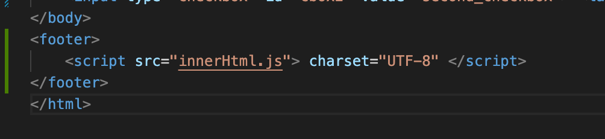

How to run javascript in snippet chrome browser
- Open the developer tool in chrome
- Go to source tab
- Select the right arrow
- click on snippets
- create a new one
- click in the play icon to run your js file
How to run javascript in a node project
- npm init
- npm inistall
in order to use prompt function:
- npm install prompt-sync
use this line in your js file
- const prompt = require("prompt-sync")();
- you will be able to use the prompt in your file
- for run the project: npm fileName
how to import javascript into a html project
Add a script tag in the footer section
